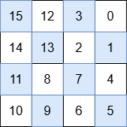

| Category | Difficulty | Likes | Dislikes |
|---|---|---|---|
| Algorithms | Medium | 108 | 9 |
google
You are given a non-negative integer n representing a 2n x 2n grid. You must fill the grid with integers from 0 to 22n - 1 to make it special. A grid is special if it satisfies all the following conditions:
Return the special 2n x 2n grid.
Note: Any 1x1 grid is special.
Example 1:
Input: n = 0
Output: [[0]]
Explanation:
The only number that can be placed is 0, and there is only one possible position in the grid.
Example 2:
Input: n = 1
Output: [[3,0],[2,1]]
Explanation:
The numbers in each quadrant are:
Since 0 < 1 < 2 < 3, this satisfies the given constraints.
Example 3:
Input: n = 2
Output: [[15,12,3,0],[14,13,2,1],[11,8,7,4],[10,9,6,5]]
Explanation:

The numbers in each quadrant are:
max(3, 0, 2, 1) < min(7, 4, 6, 5)max(7, 4, 6, 5) < min(11, 8, 10, 9)max(11, 8, 10, 9) < min(15, 12, 14, 13)This satisfies the first three requirements. Additionally, each quadrant is also a special grid. Thus, this is a special grid.
Constraints:
0 <= n <= 10